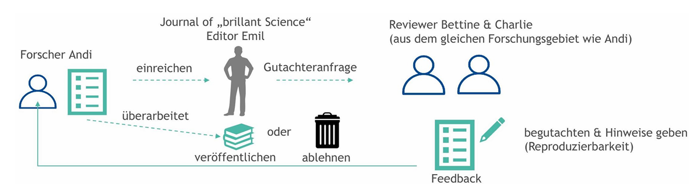

Zielsicher recherchieren
Wie recherchiert man Informationen?
Zum Anhören 👂
Dieser Inhalt wird Ihnen als Podcasts zur Verfügung gestellt.
Zum Lesen 📚
Beginnen Sie damit, den gesamten Inhalt in den nächsten 10–15 Minuten einmal zu überfliegen, um einen Überblick zu bekommen. Notieren Sie sich dabei 3–5 Kernlernziele, die für Sie am wichtigsten erscheinen oder am schwierigsten sind. Widmen Sie sich dann fokussierten Lernblöcken, z. B. 25 Minuten Lernen, 5 Minuten Pause (Pomodoro-Technik), um die folgenden Schlüsselthemen zu vertiefen.
Schlüsselbegriffe
- Zeigt das zugrundeliegende Wissen der Arbeit.
- Ermöglicht das Aufzeigen einer Forschungslücke.
- Bestätigt das Verständnis des Themas.
- Hilft, den aktuellen Forschungsstand zu erfassen und die eigene Forschungsfrage abzuleiten.
- Bildet die theoretische Grundlage der Arbeit.
- Kontinuierlich in den Phasen des Einlesens, der Konzeptentwicklung und der Erarbeitung des Theorieteils.
- Verständnis-Spirale: Iterativer Prozess, bei dem sich das Verständnis mit jedem Durchgang vertieft.
- Ein Exposé/Konzept lohnt sich immer zur Selbstreflexion und zur Veranschaulichung für andere.
- Phasen: Relevanz (Titel, Fragestellung, Aufbau, theoretische Basis), Methode (Vorgehen, Lösungsansatz), Exposé/Konzept (Lücke, Frage, Basis, Methodik, Literatur), Theorieteil (Review, Modell, Hypothesen).
Ein iterativer Prozess aus Recherchieren, Lesen und (Konzept) Schreiben.
Abdriften von der zentralen Forschungsfrage in unwichtige Randthemen ist die größte Zeit- und Fokusfalle.
- Strategien: Fokus behalten, Notizen für später machen, Priorisieren, Relevanz-Check („Ist dieses Detail absolut notwendig?").
Kernprozesse, Modelle & Regeln
- Warum: Zeigt Wissen, Forschungslücke, Verständnis; bildet die theoretische Grundlage und beantwortet die Forschungsfrage.
- Wann: Kontinuierlich – in den Phasen des Einlesens, der Konzeptentwicklung und der Erarbeitung des Theorieteils.
- Was: Art der Literaturquellen, Bewertung verschiedener Quellen.
- Wo: Zugang zu Literatur, Art der Suchwerkzeuge.
- Wie: Suchbegriffe, Suchstrategien.
Suchoperatoren sind spezielle Zeichen und Befehle (z. B. AND, OR, Anführungszeichen), mit denen sich Suchanfragen in Datenbanken und Suchmaschinen gezielt eingrenzen oder erweitern lassen. Im wissenschaftlichen Kontext helfen sie dabei, aus einer riesigen Menge an Literatur genau die relevanten Quellen herauszufiltern – das spart Zeit und erhöht die Treffgenauigkeit und Qualität der Recherche.
- AND: Konzepte kombinieren.
- OR: Alternative Begriffe kombinieren (Klammern verwenden).
- Anführungszeichen (" "): Exakte Wortfolge suchen.
- Trunkierung (*): Alle möglichen Wortendungen finden (z. B. tax*).
- Wildcard (?): Alternative Buchstabenfolgen finden (z. B. Organi?ation).
- NOT: Ausschluss nicht benötigter Suchbegriffe.
- Kumulative Suche (Schneeballsuche/Rückwärtssuche) 🎯: Beginnt mit einer Quelle, untersucht diese nach weiteren zitierten Quellen. Schneller Überblick, aber subjektiv und oft ältere Literatur.
- Systematische Suche 🧭: Fragestellung schärfen, Suchbegriffe ableiten, geeignete Quellen/Datenbanken wählen, Suchstrategie festlegen, sichten und auswerten. Bietet eine „Hubschrauberperspektive".
- Vorwärtssuche ➡️: Suche nach Quellen, die die gefundene Literatur zitieren.
- Zitierfähigkeit: Öffentlich verfügbar und dauerhaft rückverfolgbar.
- Zitierwürdigkeit: Vertrauenswürdigkeit und Qualität (aktuell, Aussagen belegt, Autor aus Wissenschaft, wissenschaftlicher Fachverlag, Peer Review, wiss. Erkenntnisinteresse).
- Suchen: Geeignete Literatur finden; unterscheiden zwischen Zitierinformationen, Open-Access-Elementen und Volltexten.
- Screenen: Eignung des Werks anhand von Open-Access-Elementen einschätzen.
- Sammeln: Geeignete Werke in einer Liste sammeln (z. B. Zotero).
- Lesen: Geeignetes Werk lesen.
- Extrahieren: Zentrale Inhalte festhalten (z. B. Tags oder Notizen).
⚠ KERNBOTSCHAFT: KI ist ein Werkzeug – die Verantwortung bleibt beim Anwender.
- KI-Ergebnisse niemals ungeprüft übernehmen.
- Jede Quelle und jedes Zitat rückverfolgen.
- Eignung des Tools für das Fachgebiet prüfen.
- Abgleich mit klassischer Recherche und Fakten.
- Originaltexte konsultieren und lesen.
- Plausibilität und logische Kohärenz hinterfragen.
- Bibliotheken: HS Ansbach, Bayrische Staatsbibliothek, Handbibliotheken der Profs, Fernleihe.
- Online-Suchmaschinen: Google Scholar.
- Fachdatenbanken: WISO, ScienceDirect, SpringerLink, EconBiz, Statista.
- KI-Tools: Perplexity, Consensus, Elicit, Litmaps.
- Weitere: Web of Science, Scopus, BASE, Semantic Scholar, ResearchGate, Refseek.
- DBIS der HS Ansbach: EBSCO Business Source, Beck online, INSPEC, Wiley Online Library u. a.
- KVK: Weltweite Meta-Suchmaschine für Bibliotheks- und Buchhandelskataloge (über 75 Mio. Bücher).
- EZB / ZDB: Überblick über elektronisch verfügbare Zeitschriften.
📖 Wissenschaftliches Publizieren

- Monografie: Ein Buch zu einem Thema, oft von einer Person verfasst.
- Fachartikel: Wissenschaftlicher Text in einer Zeitschrift (Journal), besonders wichtig für die Literatursuche aufgrund von Aktualität, wissenschaftlicher Qualität (Peer Review) und Zitationswürdigkeit.
- Sammelband/Tagungsband: Buch mit Beiträgen mehrerer Autoren, oft von Konferenzen.
- Dissertation/Habilitation: Abschlussarbeiten an Universitäten.
- Preprint: Vorab-Veröffentlichung ohne Qualitätsprüfung.
- Peer Review: Standardmethode zur Qualitätssicherung, bei der andere Forschende die Arbeit vor Veröffentlichung prüfen.
- Single-Blind Peer-Review: Autor kennt Gutachter nicht.
- Double-Blind Peer-Review: Weder Autor noch Gutachter kennen die Identität des jeweils anderen.
- Open Review: Prüfung ist transparent.
- Editorial Review: Redaktion prüft die Arbeit.
- Keine Prüfung: Z. B. bei Preprints oder Blogs.
- Peer-Review-geprüfte Publikationen sind qualitätsgesichert und machen neue Erkenntnisse bekannt.
- Bibliotheken helfen beim Zugang zu Literatur (auch Closed Access) und beraten zu Open Access.
- Open Access ermöglicht allen (auch außerhalb der Universität) Zugang zu Forschungsergebnissen.
Wesentliche Fakten & Daten
- 50 % der Wissenschaftler nutzen Google/Google Scholar, 43 % Datenbanken und 21 % Bibliothekskataloge als Startpunkt der Recherche.
- Eine Beispielsuche zu „Taxation of animal products in the European Union" ergab ca. 180.000 Treffer in Google Scholar, aber nur ca. 5.000 im Bibliothekskatalog.
- Der Gesamtumfang der Literatur zum Thema Kundenzufriedenheit beträgt ca. 20.000 Beiträge.
- Social Media (Instagram, TikTok, YouTube) sind keine wissenschaftlichen Quellen.
- Renommierte Psychologie-Zeitschriften: Journal of Applied Psychology, Personnel Psychology, Academy of Management Journal, Psychological Bulletin, Psychological Review u. a.
- Große Wissenschaftsverlage: Taylor & Francis (GB), SAGE (USA), Springer (DE/NL).
Um Ihr Wissen langfristig zu sichern, wenden Sie die Methode der gestaffelten Wiederholung an:
Ergänzende Materialien:
Jhangiani, R. S., Chiang, I. C. A., Cuttler, C., & Leighton, D. C. (2019). Research methods in psychology Kwantlen Polytechnic University. – Chapter II The Science of Psychology (pp. 25–58)
Zum Sehen 👀
Videos:


![How To Use Google Scholar [Cutting-Edge AI Techniques To Unlock Hidden Research]](https://img.youtube.com/vi/U38m6yA8qgQ/hqdefault.jpg)